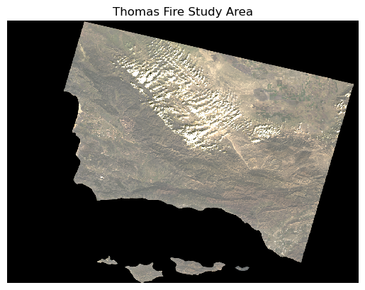
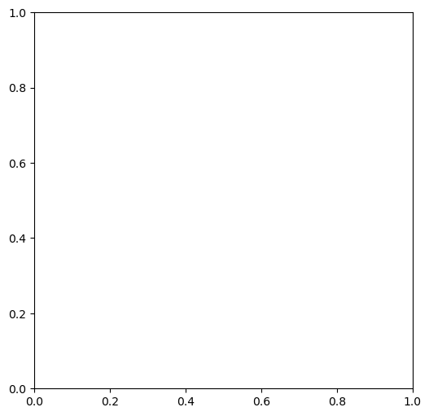

# ---- Load libraries ----
import os
import numpy as np
import matplotlib.pyplot as plt
import pandas as pd
import geopandas as gpd
from shapely.geometry import Polygon
from pyproj import CRS
import rioxarray as rioxr
import xarray as xrtitle: “Analyzing Impacts of the Thomas Fire” description: “In Santa Barbara & Ventura Counties (Dec. 2017 - Jan. 2018)” author: - name: Nicole url: https://github.com/nicolelpepper affiliation: Bren MEDS affiliation-url: https://bren.ucsb.edu/masters-programs/master-environmental-data-science/academics-meds-program date: 2024-10-18 categories: [GIS, Remote-Sensing, MEDS] image: thomas-fire.png bibliography: references.bib draft-mode: visible citation: url: https://github.com/nicolelpepper/personalwebsite/2024-12-02-thomas-fire editor_options: chunk_output_type: console
A Beginner’s Python Analysis of the Impacts of the Thomas Fire
In Santa Barbara & Ventura Counties (Dec. 2017 - Jan. 2018)
The Thomas Fire, which ignited on December 4, 2017, burned approximately 281,893 acres in Ventura and Santa Barbara counties, making it one of the largest and most devastating wildfires in California’s history. The fire left behind extensive burn scars with widespread loss of vegetation and unstable soil, leaving the region vulnerable to erosion. In 2018, heavy rains caused massive flooding and debris flows, which resulted in catastrophic damage and tragic loss of life.
Here I share my beginner’s Python exercise exploring some of the impacts of the Thomas Fire using satellite imagery and air quality data.
Part 1. Visualizing the Thomas Fire burn scar using false color
Overview:
Satellite data can be used to visualize landscapes beyond what the bare eye can see. In this section I utilize true color and false color settings to visualize the Thomas Fire burn area.
Highlights: - Working with satellite imagery with rioxr - Working with geospatial data with geopandas - Creating a map with matplotlib
Step 1A: Set up my workspace
To begin work this exercise I set up my workspace by loading in the libraries that are necessary for the analysis:
& set up my working environment.
# ---- Set working environment ----
# Set anaconda environment
os.environ['PROJ_LIB'] = '/opt/anaconda3/share/proj'
# Set up a root path directory
root = os.path.join('/',
'courses',
'EDS220',
'data',
'hwk4_landsat_data')Step 1B: Import & prepare data
- The
thomas_fire.shpis a shapefile containing the fire perimeter for the Thomas Fire in 2017. It is subset of a CAL FIRE dataset with historical boundaries for fires (including both natural and prescribed fires) in the state of California. The dataset has a good record of past large fires but is not complete and may be missing some fires. The thomas_fire.shp data is stored in/data/thomas_firefolder in the repo, I did not push the original full Cal Fire dataset to GitHub, it was accessed locally. - The
landsat.ncdataset is an image from Landsat Collection 2 Level-2, from the Microsof Planetary Computer data catalogue. Landsat Collection 2 Level-2 Science Products consist of atmospherically corrected surface reflectance and surface temperature image data. Collection 2 Level-2 Science Products are available from August 22, 1982 to present. It is accessed through UCSB Workbench 1/courses/EDS220/data/hwk4_landsat_data landsat8-2018-01-26-sb-simplified.nc.
# ---- Import data ----
# Import Thomas Fire boundary
thomas_fire = gpd.read_file("data/thomas_fire/thomas_fire.shp")
# Import landsat .nc file
fp = os.path.join(root,'landsat8-2018-01-26-sb-simplified.nc')
landsat = rioxr.open_rasterio(fp)Next I prepared the data CRS to match.
# ---- Prepare CRS ----
# Check if crs matches landsat data
landsat.rio.crs == thomas_fire.crs
# Reproject to landsat crs
thomas_fire = thomas_fire.to_crs(landsat.rio.crs)
# Check if crs matches landsat data
landsat.rio.crs == thomas_fire.crsTrueStep 1C. Explore the Data
Now I’m interested in learning more about the landsat data that I’ll be using. Here I explore different characteristics about my data.
# ---- Explore data ----
# Display all columns in preview
pd.set_option("display.max.columns", None)
# Check out landsat data dimensions
print('Size of landsat dimensions: ', dict(landsat.sizes))
print('Here are the landsat original coordinates ', landsat.coords)
print("The shape of Landsat is", landsat.rio.shape)
print("The dtypes of Landat are", landsat.data_vars)
# ---- Check crs ----
# Check if fire data is geographic
print("Is the landsat CRS geographic?", landsat.rio.crs.is_geographic)
# Check if fire data is projected
print("Is the landsat CRS projected?", landsat.rio.crs.is_projected)
# Print the CRS name
print("The ca_fires CRS is:", landsat.rio.crs)Size of landsat dimensions: {'band': 1, 'x': 870, 'y': 731}
Here are the landsat original coordinates Coordinates:
* band (band) int64 8B 1
* x (x) float64 7kB 1.213e+05 1.216e+05 ... 3.557e+05 3.559e+05
* y (y) float64 6kB 3.952e+06 3.952e+06 ... 3.756e+06 3.755e+06
spatial_ref int64 8B 0
The shape of Landsat is (731, 870)
The dtypes of Landat are Data variables:
red (band, y, x) float64 5MB 0.0 0.0 0.0 0.0 0.0 ... 0.0 0.0 0.0 0.0
green (band, y, x) float64 5MB 0.0 0.0 0.0 0.0 0.0 ... 0.0 0.0 0.0 0.0
blue (band, y, x) float64 5MB 0.0 0.0 0.0 0.0 0.0 ... 0.0 0.0 0.0 0.0
nir08 (band, y, x) float64 5MB ...
swir22 (band, y, x) float64 5MB ...
Is the landsat CRS geographic? False
Is the landsat CRS projected? True
The ca_fires CRS is: PROJCS["WGS 84 / UTM zone 11N",GEOGCS["WGS 84",DATUM["World Geodetic System 1984",SPHEROID["WGS 84",6378137,298.257223563]],PRIMEM["Greenwich",0],UNIT["degree",0.0174532925199433,AUTHORITY["EPSG","9122"]],AUTHORITY["EPSG","4326"]],PROJECTION["Transverse_Mercator"],PARAMETER["latitude_of_origin",0],PARAMETER["central_meridian",-117],PARAMETER["scale_factor",0.9996],PARAMETER["false_easting",500000],PARAMETER["false_northing",0],UNIT["metre",1],AXIS["Easting",EAST],AXIS["Northing",NORTH],AUTHORITY["EPSG","32611"]]My preliminary data exploration found that the Landsat data is a projected geospatial layer. It’s CRS is is EPSG 32611 or WGS 84 / UTM Zone 11N. The Landsat data has a total of 1 band. Its size is 870 by 731. I also got its original coordinates and a list of the variables in the dataset which are ‘red’, ‘green’, ‘blue’, ‘nir08’, and ‘swir22’. Since there is only one band for the data, I’m going to simplify it by dropping the dimensions to make it easier to work with.
Step 1D. Prepare the landsat data for visualization
Since the landsat data only has one band, I can simplify it so that it’s easier to work with. To do this, I’m going to use .squeeze() and .drop_vars() to remove the band length of 1.
# Remove length 1 dimension (band) and reassign
landsat = landsat.squeeze().drop_vars('band', errors='ignore')
# Check updated dimensions of the coordinates
print(landsat.dims, landsat.coords)FrozenMappingWarningOnValuesAccess({'x': 870, 'y': 731}) Coordinates:
* x (x) float64 7kB 1.213e+05 1.216e+05 ... 3.557e+05 3.559e+05
* y (y) float64 6kB 3.952e+06 3.952e+06 ... 3.756e+06 3.755e+06
spatial_ref int64 8B 0Step 1E. Visualize the Landsat data in true color
‘True-color’ is a term used by remote sensing experts to describe displaying a satellite image in colors similar to what most people would see with their bare eyes. This means plotting the ‘red’, ‘green’, and ‘blue’ bands in their respective order.
Here I plot the landsat image in true color (R-G-B) to visualize what the burn area looks like over the region.
# Select and plot the red, green, and blue variables
landsat[['red', 'green', 'blue']].to_array().plot.imshow()Clipping input data to the valid range for imshow with RGB data ([0..1] for floats or [0..255] for integers).
Hmmmmm…. something here doesn’t look right! The map shows up in black and white when I was expecting it to look like a true color image.
This is because the clouds in the image introduce extreme, outlier values. By setting the robust = True parameter in the in .imshow(), I adjust the color scale based on the 2nd and 98th percentiles of the values, which helps minimize the influence of these outliers. This allows the color ramp to more accurately reflect the distribution of values where most of the data lies, providing a clearer representation of the underlying “true color” patterns in the image.
# Select and plot the red, green, and blue variables
landsat[['red', 'green', 'blue']].to_array().plot.imshow(robust=True) # scale on the 2 & 98th percentiles
Ahhh, much better! Now this is more like what I was expecting to see in my true color image. This map helps me get a feel for what the landscape looks like, but it is difficult for me to distinguish between landcover like healthy, dense vegetation versus bare grounding.
Step 1F. Visualize the Landsat data in false
Next, I’d like to see if I can visualize the burned area better by integrating other bands of the landsat image in ‘false color’. ‘False color’ is a term in remote sensing to describe when colors are assigned to represent data that isn’t visible to the human eye, for example using different wavelengths of light like near-infrared.
Vegetation is known to be highly reflective in the near-infrared (NIR) and short-wave infrared (SWIR) bands and absorbs in the red, so by visualizing the surface with this it helps pick out healthy, productive vegetated areas from bare ground. For this reason, I want to visualize the landsat image in “false color” using the SWIR, NIR, and red bands (SWIR-NIR-R).
# Select and plot swir, nir, and red variables
false_color = landsat[['swir22', 'nir08', 'red']].to_array().plot.imshow(robust=True) # scale on the 2 & 98th percentiles
That worked! Now I can much more easily distinguish between different land surface characteristics. I can see a large and irregular area in red, which roughly delineates bare ground, in the area where the Thomas Fire burned.
### Step 1G. Overlay the Thomas Fire boundary on the false color image# Set aspect ratio for map
#fire_aspect_ratio = false_color.shape() / false_color.shape()
# Set figure parameters
fig, ax = plt.subplots(figsize=(6, 6))
# Add false color imagery for background
# 'robust = True' sets scale based on the 2nd and 98th percentiles to reduce influence of outliers
false_color.plot.imshow(ax = ax,
robust=True)
# Add thomas fire boundary
thomas_fire.boundary.plot(ax=ax,
color = "#780B12",
linewidth = 0.6,
alpha = 0.8)
# Add title
ax.set_title('Thomas Fire Boundary (2017) Southern California',
color="#222626",
fontsize=12)
ax.axis('off')
# Add legend for fire perimeter
plt.legend(thomas_fire,loc='upper right', labels = ["Thomas Fire"])
plt.show()AttributeError: 'AxesImage' object has no attribute 'plot'
print(type(false_color))<class 'matplotlib.image.AxesImage'>